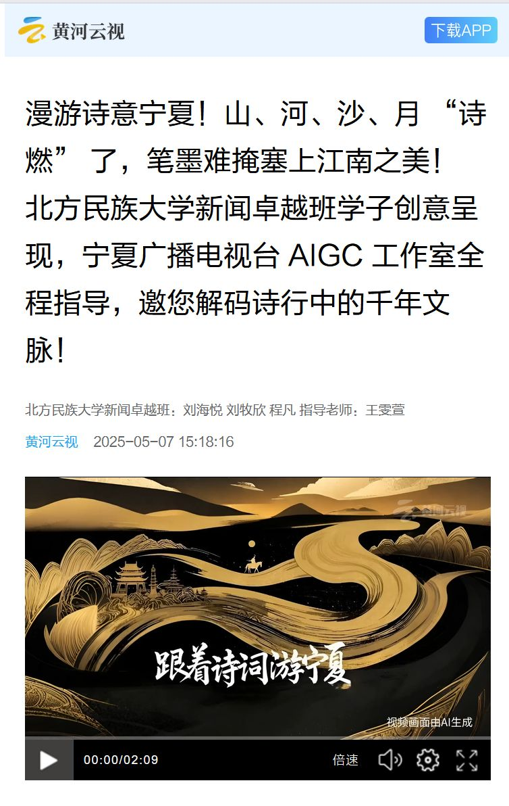
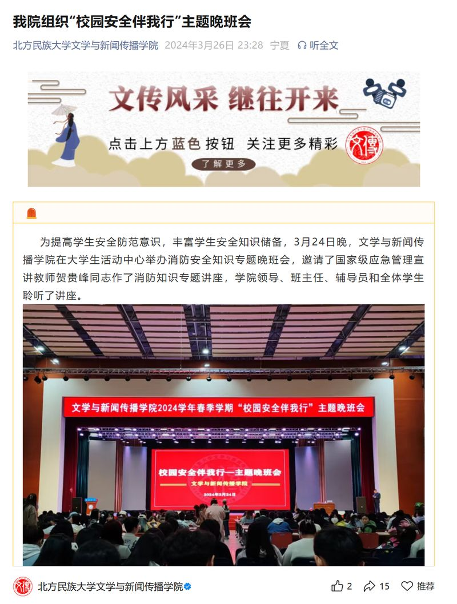
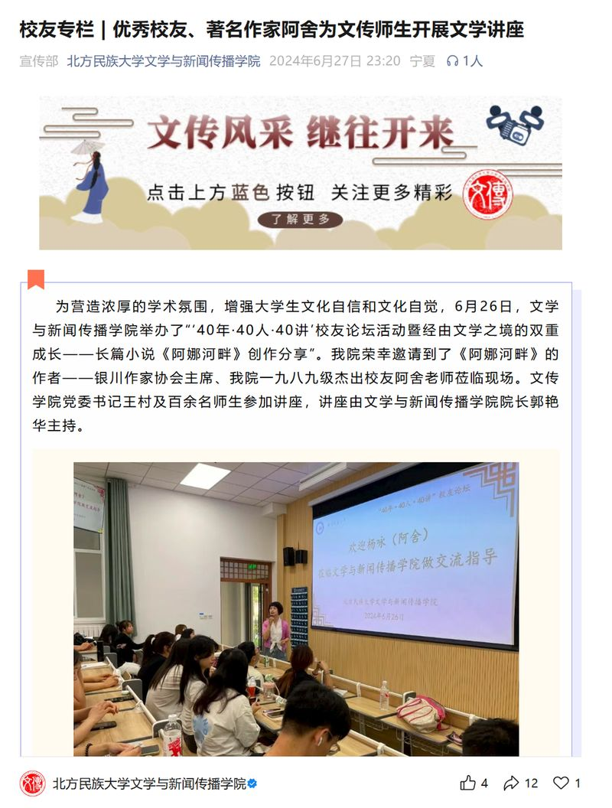
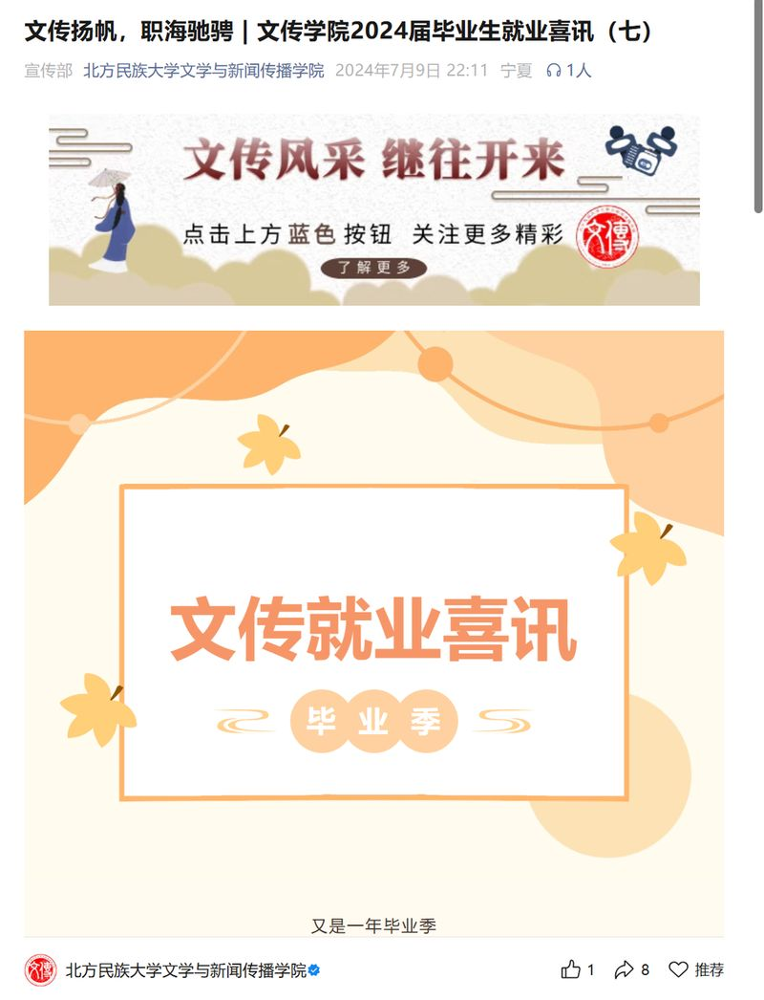
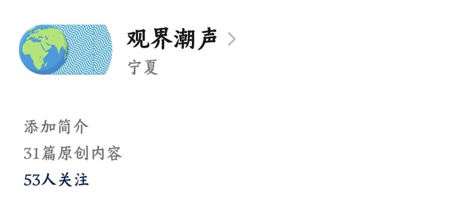
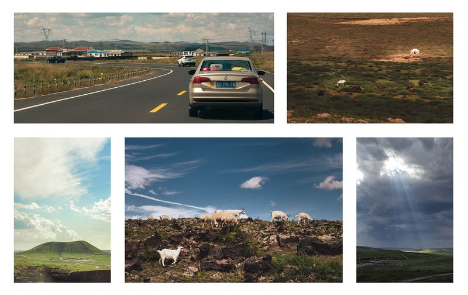
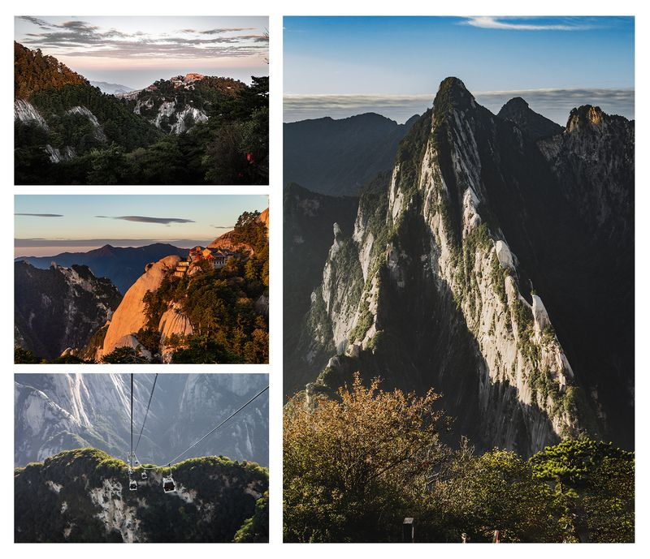

04 · EDITORIAL
图文类
公众号运营 · 推文采写排版 · 摄影作品
01 公众号运营
校园媒体 · 编辑
北方民族大学文学与新闻传播学院团委宣传部
负责学院新闻采写、拍摄和学院公众号推文制作发布。



自主创办 · 主编
公众号「观界潮声」
自主创办并运营，独立完成选题策划、图文撰写、排版制作与发布。

扫码关注，查看图文作品
02 摄影作品
2025 年北方民族大学首届网络文化节和网络教育优秀作品展示活动 获奖作品
风过草原
二等奖
以内蒙草原为拍摄对象，用组图记录旅途中的光影与牧群，在开阔构图中呈现草原的气候与呼吸感。
西岳灵辉
三等奖
以华山为对象，捕捉日出前后的色温变化与山体轮廓，通过长焦压缩与逆光剪影强化西岳的峻拔气势。